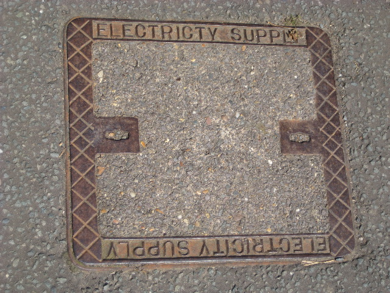

Friday, August the 12th, 2011
back to: title, date or indexes
In the age of barbarism, we have become sadly used to the sight of misspelled signage. Oh, how we hark back to the days of traditionally manufactured metal pavement utility covers, made with craft and care… unless, of course, we are in Dunchurch, a village in Warwickshire.

Snap by Miss Dimity Cashew, VI.VIII.MMXI